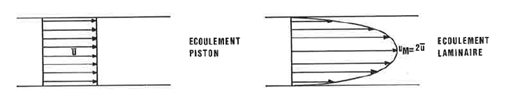
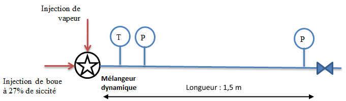
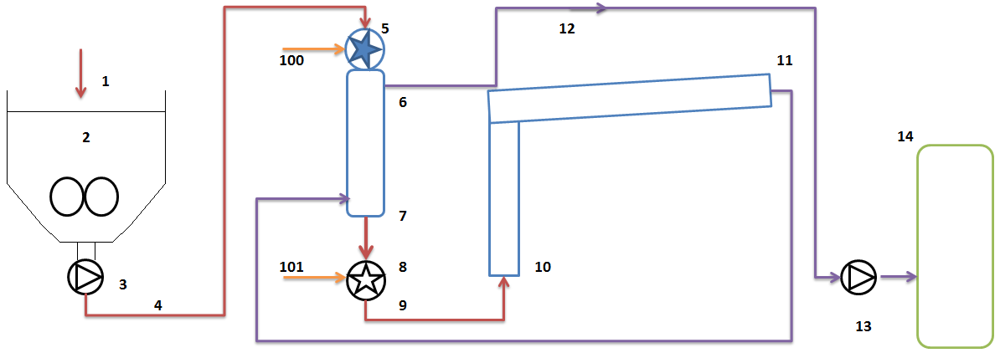
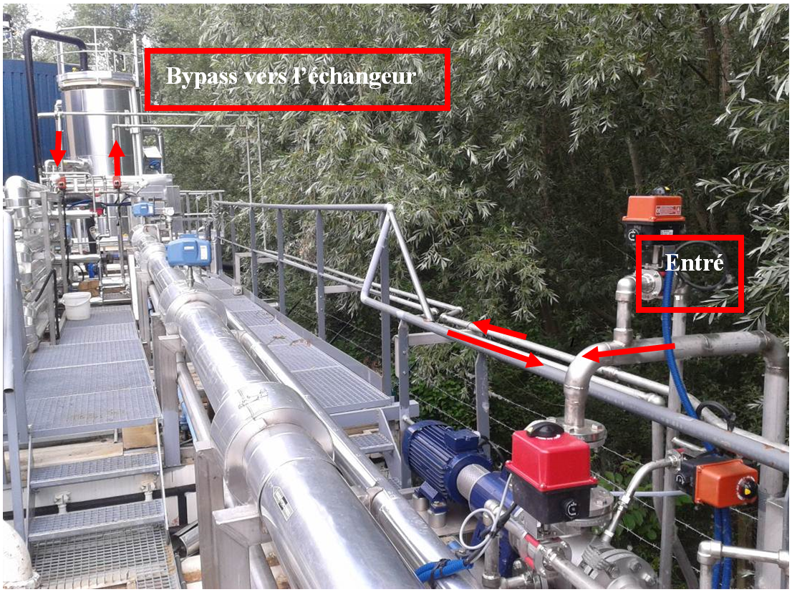
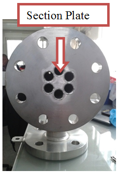
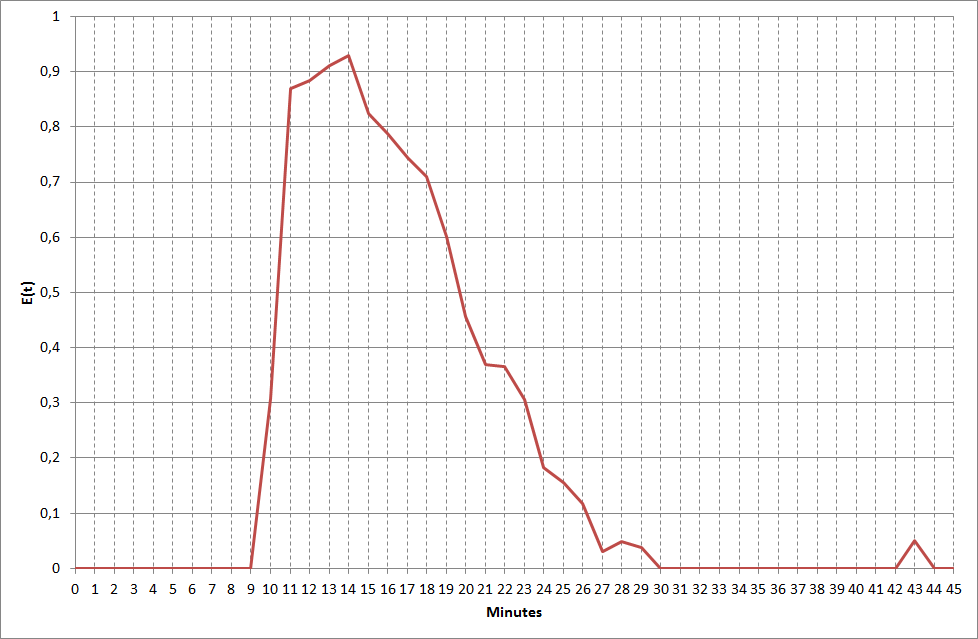
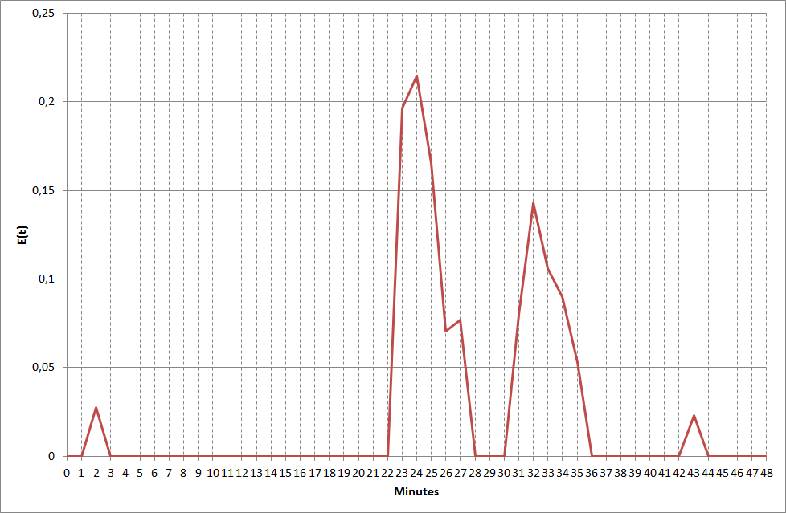
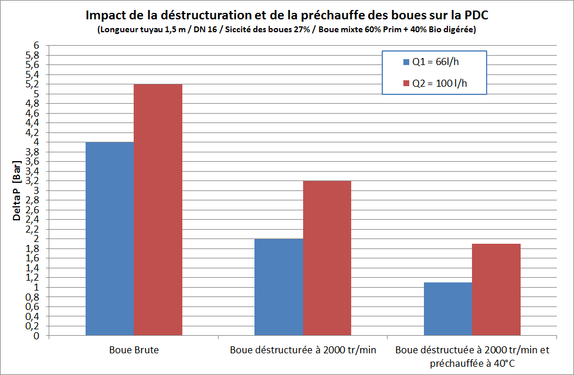
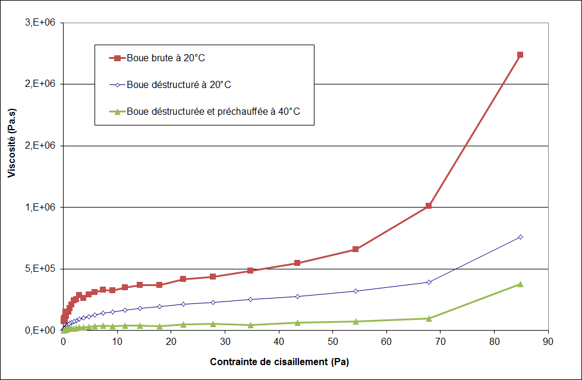
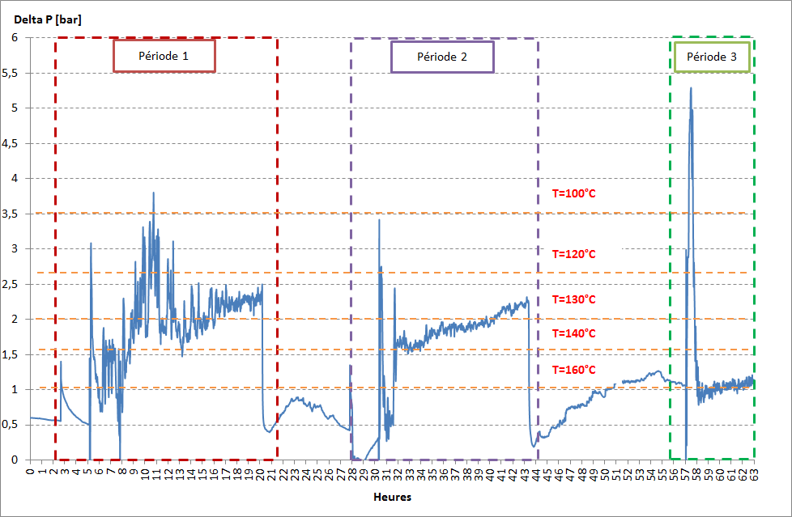

Attente réglementaire et énergétique
Dans le chapitre 2 sont modélisés les phénomènes d'évapo-condensation au sein d'un condenseur vertical afin d'estimer si une canne statique d'injection vapeur pourrait assurer le transfert convenable de masse et d'énergie de la vapeur au sein de la boue aboutissant à une homogénéité des températures.
Dans le chapitre 3, il est démontré expérimentalement que, par la complexité de la matrice boue, une canne d'injection statique n'est pas suffisante pour assurer la condensation de la vapeur et l'homogénéité des températures. Une solution pressentie au chapitre 2, à savoir l'utilisation d'un mélangeur dynamique, a pu ainsi être testée et validée expérimentalement. L'homogénéité des températures assurée, les performances de solubilisation et son impact sur la production de biogaz ont pu être mesurées expérimentalement.
Cependant, avant de considérer que la technologie développée puisse concurrencer voire remplacer des technologies fonctionnant par bâchées, deux aspects importants doivent être traités à savoir les aspects réglementaires et énergétiques.
4.1 Les enjeux réglementaire et énergétique
4.1.1 Contexte réglementaire
Les performances d'hygiénisation sont l'un des éléments clefs des technologies d'hydrolyse. Ce type de traitement thermique permet de détruire les éléments pathogènes et ainsi d'envisager toute sorte d'exutoire pour les boues.
Cette notion d'hygiénisation permet de valider la pertinence du procédé car, implicitement, une boue non hygiénisée implique soit une température de réaction non atteinte et donc une mauvaise condensation de la vapeur, soit un chemin préférentiel avec potentiellement des zones mortes dans le réacteur, soit un temps de réaction trop court.
Vérifier l'hygiénisation pour un procédé continu signifie vérifier l'homogénéité des températures, ce qui a été vu précédemment au chapitre 3, mais aussi le temps de séjour hydraulique et l'abattement des éléments pathogènes.
Vérification du temps de séjour hydraulique
Le concept de distribution du temps de résidence a été introduit afin de caractériser l'écoulement d'un réacteur dès 1953. Ce temps de résidence consiste à injecter un traceur, dont la concentration est connue, à l'entrée d'un réacteur et à suivre l'évolution de sa concentration en sortie de celui-ci.
La fonction de distribution de temps de séjour E(t) est définie par :
avec C(t) la concentration du traceur mesurée en sortie du réacteur à chaque instant t.
L'injection du traceur peut se faire par une impulsion ou bien en échelon. Pour un écoulement en flux piston, le signal de sortie serait un dirac. Dans la réalité, les réacteurs ne sont jamais des pistons parfaits. Ainsi, comme montré à la figure 4.1, la réponse à une impulsion en entrée de réacteur (courbe rouge) sera un signal de sortie s'apparentant à une courbe en forme de cloche plus ou moins étalée (courbe bleue).

La méthode de la distribution de temps de séjour repose sur trois hypothèses qui sont un régime d'écoulement permanent, un fluide incompressible, un écoulement déterministe ne faisant pas intervenir de processus aléatoires macroscopiques. Or, la boue est un fluide compressible dont le comportement initial est viscoplastique. Les DTS effectuées sur le système ne satisferont pas ces trois conditions opératoires prérequises.
Pour le dimensionnement du pilote il a été considéré que l'écoulement de la boue à travers le système serait de type flux piston. Comme rappelé par la figure 4.2, un écoulement en flux piston correspond à un profil de vitesse plat alors qu'un écoulement laminaire a un profil de vitesse parabolique. Les caractéristiques rhéologiques des boues, ainsi que les faibles vitesses d'écoulement du fluide de l'ordre de 2 à 6 mm/s, conduisent à envisager un écoulement laminaire. La question est de démontrer que la plus rapide des particules de boue, celle au sommet de cette parabole, a bien un temps de séjour d'au moins 20 minutes dans le système.

Le choix d'un traceur n'est pas anodin. Le traceur :
- Doit être différent du milieu analysé ou déjà présent dans le milieu mais en faible quantité,
- Ne doit pas voir ses propriétés modifiées ou altérées par le milieu,
- Ne doit pas réagir avec le milieu,
- Doit être compatible avec le milieu et l'environnement,
- Ne doit pas être dangereux,
- Doit pouvoir se manipuler facilement.
Lopes précise qu'il doit de plus n'avoir que peu ou pas d'impact sur le milieu et être facilement analysable.
La problématique est de déterminer la méthode la mieux adaptée à des boues municipales à haute siccité soumises à une forte pression et une haute température et dont la rhéologie évoluera au cours de son séjour dans le réacteur.
La littérature ne fait pas état d'un traçage sur des boues pâteuses qui de plus vont être déstructurées, chauffées et hydrolysées. Cependant, on trouve de nombreux travaux sur le traçage des boues rouges issues du procédé Bayer. Ainsi, comme listé dans le tableau 4.1, les traceurs utilisés pour suivre ces boues rouges sont de la poudre de fer, du chlorure de lithium, un acide carboxylique, du nitrate de sodium, du sulfate de baryum ou bien un radio-isotope.
| Type de traceur | Nature du traceur | Méthodologie de détection |
|---|---|---|
| Poudre de fer | solide | Détection électromagnétique |
| Chlorure de lithium | liquide | Spectrométrie d'adsorption atomique |
| Acide carboxylique | liquide | Chromatographie gazeuse |
| Nitrate de sodium | liquide | Chromatographie |
| Sulfate de baryum | solide | Rayon X |
| Radio-isotopes | solide | Radiodétection |
Des travaux sur le traçage de procédés liés aux eaux usées ont aussi été menés. Le tableau 4.2 liste les techniques employées dans le cadre d'un suivi des eaux usées, à savoir le fluorure, de l'encre, un radio-isotope ou bien du chlorure de sodium.
| Type de traceur | Nature du traceur | Méthodologie de détection |
|---|---|---|
| Radio-isotopes | solide | Radiodétection |
| Fluorure | liquide | Non-spécifié |
| Encre | liquide | Fluorimétrie |
| Chlorure de sodium | liquide | Conductivité |
Chacune de ces méthodes est évaluée ci-dessous.
La détection électromagnétique ne peut être satisfaisante car la détection sur un réacteur sous pression n'est pas envisageable. De plus, il faudrait ajouter un traceur métallique dans des boues qui peuvent déjà contenir du fer.
La spectrométrie d'absorption atomique via l'injection de chlorure de lithium se pratique sur des digesteurs de boue municipale car la dose de traceur nécessaire est faible. Néanmoins, son coût est élevé et la détection se fait par analyse en laboratoire et non in-situ ce qui ne permet pas de réajuster les tests. Cette méthode fonctionne sur des boues peu concentrées, sur des temps longs.
L'acide carboxylique et le nitrate de sodium nécessitent la mise en place d'un chromatographe ce qui est non applicable sur la boue. Quant au sulfate de baryum, la mise en place d'une détection par rayon X nécessite des habilitations particulières ainsi que des coûts d'installation élevés.
Sur des boues municipales, la fluorimétrie n'aurait que peu de chance de fonctionner sachant que l'ajout d'encre ne changerait pas la couleur de la boue.
La radio détection serait envisageable sur des boues refroidies et diluées mais à un coût élevé.
Reste le chlorure de sodium qui pourrait être utilisé pour modifier la conductivité de la boue. La mesure de la conductivité peut se faire en ligne et est peu coûteuse.
Au choix du traceur s'ajoute la nécessité de trouver une méthode facilement implémentable sur un réacteur en pression et température, peu coûteuse, permettant une mesure en continu du marqueur en sortie de réacteur, un marqueur n'impactant pas la boue. Il faut aussi que la méthode soit facilement reproductible et facile à mettre en place.
Vérification de l'abattement des éléments pathogènes
Les marchés de l'hydrolyse thermique les plus actifs se situent en Amérique et en Asie. Sur ces marchés, les procédés d'hydrolyse thermique doivent permettre d'obtenir une hygiénisation parfaite des boues telle que définie par la réglementation Américaine de l'US EPA servant de référence hors Europe.
Cette réglementation définit une hygiénisation dite « Class A » imposant que chaque particule de boue ait eu un temps de traitement à 140 °F, soit 60 °C, pendant au moins 20 minutes. Pour les procédés discontinus tels que le procédé BioThelys ou le procédé CAMBI, le temps de traitement est imposé par le cycle global et les bâchées. Dans le cas d'un procédé continu, il faut prouver qu'il n'y a pas formation de chemin préférentiel et que la particule de boue traversant le plus rapidement le procédé a un temps de séjour minimal de 20 minutes. Pour cela, il convient de contrôler les deux notions liées que sont :
- l'hydraulique du réacteur. Le contrôle de l'hydraulique sert à s'assurer qu'il n'y a pas la présence d'un chemin préférentiel dans le réacteur ce qui ne permettrait pas d'assurer que la particule de boue la plus rapide ait le temps de séjour minimum requis de 20 minutes.
- le temps de séjour de la boue dans le réacteur. Le contrôle du temps de séjour est important car, pour garantir que la particule de boue traversant le plus rapidement le réacteur a un temps de séjour suffisant, et donc un temps de traitement dans les conditions voulues de pression et de température, pour assurer les performances de l'hydrolyse thermique.
À ces considérations de temps de séjour et d'hydraulique s'ajoutent des limites réglementaires d'éléments pathogènes présents dans les boues traitées.
Ces valeurs limites imposées par la « Class A » sont indiquées dans le tableau 4.3. Six paramètres sont suivis à savoir les salmonelles dont la concentration doit être inférieure à 3 NPP pour 4 g de MS. La concentration en enterovirus doit être inférieure à 1 PFU pour 4 g de MS. Les œufs d'helminthes sont exprimés en unité pour 4 g de MS. Les coliformes fécaux doivent être inférieurs à 1000 NPP par g de MS. L'abattement des MV doit être supérieur à 38 %.
La réglementation anglaise « UK enhanced treated sludge » est moins contraignante et impose des échantillons sans salmonelle et, pour les Escherichia coli, un abattement correspondant à une réduction de 6 log et une concentration inférieure à 1000 NPP par g MS.
En France, l'arrêté du 8 janvier 1998 impose de limiter à 8 NPP pour 10 g de MS les salmonelles, d'être sous les 3 PFU pour 10 g de MS pour les entérovirus et d'être sous les 3 unités pour 10 g de MS pour les œufs d'helminthes.
Le respect de l'US EPA entraîne implicitement le respect des réglementations anglaise et française.
| Germes (pour les boues hygiénisées) | Class US EPA [40 CFR Part 503] | UK « Enhanced Treated Sludge » |
|---|---|---|
| Salmonelles | < 3 NPP / 4 g MS | 0 / 2 g MS |
| Enterovirus | < 1 PFU / 4 g MS | |
| Œufs d'helminthe viables | < 1 / 4 g MS | |
| Escherichia coli | — | > 6 log réduction et < 1 000 / g MS |
| Coliformes fécaux | < 1 000 NPP / g MS | |
| Abattement des MV | > 38 % |
La vérification des performances d'hygiénisation ne peut reposer que sur des analyses. Pour cela, une campagne d'analyse va être réalisée avant et après hydrolyse. Afin de s'assurer de la représentativité du résultat, une série de 10 échantillons sera prélevée à quelques jours d'intervalle.
Lors de la prise d'échantillon, il conviendra de définir puis de suivre un protocole visant à s'assurer que les échantillons prélevés ne seront pas contaminés lors de l'échantillonnage ce qui viendrait fausser les résultats.
4.1.2 Attente énergétique
Les deux principaux procédés ayant des références industrielles fonctionnent par bâchées. Leur consommation énergétique est liée à la siccité des boues en entrée et à leur capacité à récupérer de la vapeur de revaporisation. Cette capacité de récupération d'énergie est liée à leur taille et à la durée de leurs cycles.
L'un des avantages d'un procédé fonctionnant en continu est de n'avoir qu'un réacteur sans avoir à se préoccuper ni de la gestion des cycles, ni des phases de décompression, ni de la gestion de la phase flash. Or, pour les procédés batch précédents, en dépressurisant de 7 à 1 bar, la vapeur de flash recirculée servant à préchauffer les boues en entrée représente 30 % des besoins énergétiques des procédés. Cette énergie est constamment récupérée ce qui n'est pas le cas avec le procédé continu qui ne dispose pas de récupération de vapeur flash. Pour conserver une consommation vapeur par tonne de matière sèche traitée équivalente, la siccité calculée à l'entrée du procédé continu ne devrait plus être de 16 % mais de 23 %.
Cependant, selon leur nature, il n'est pas toujours possible de déshydrater certaines boues jusqu'à 23 % de siccité ou bien est-ce au prix d'une consommation excessive de polymère. Dans une configuration DLD, les boues étant digérées, cette siccité est atteignable. Par contre, il sera peu probable d'obtenir plus de 20 % de siccité avec des boues biologiques ce qui pénalisera la configuration LD.
Pour envisager le déploiement d'un procédé d'hydrolyse thermique en continu il est nécessaire de se pencher sur la question de son efficacité énergétique quelle que soit la siccité de la boue et plus particulièrement pour des siccités sous les 23 %.
Plusieurs solutions sont envisagées pour optimiser l'efficacité énergétique du procédé. La récupération de vapeur de revaporisation n'est pas permise car elle enfreindrait des brevets existants. La mise en place d'une chaudière de récupération pour produire de la vapeur vive basse pression en récupérant l'énergie dégagée lors du refroidissement des boues hydrolysées est envisageable mais le coût conséquent d'une telle solution favorise la recherche d'une solution alternative. Des échangeurs à surface raclée présentent de nombreux avantages mais leur conception actuelle ne leur permet pas d'accepter des pressions de plus de 10 bar. La piste d'un échangeur boue-boue de type tubes et calandre acceptant de forte viscosité sera donc étudiée.
Les difficultés à surmonter pour ce type d'échangeur sont nombreuses, à savoir :
- La forte viscosité des boues, liée à la haute siccité des boues traitées et à leur nature collante, engendre de fortes pertes de charge,
- Une faible vitesse d'écoulement induisant une sédimentation de la matière en suspension aboutissant à un colmatage de l'échangeur ainsi qu'un coefficient de convection faible.
Le principal point bloquant pour la mise en œuvre d'un échangeur boue-boue est leur haute viscosité. Il faudrait abaisser cette viscosité de manière à assurer un écoulement homogène dans l'échangeur tout en minimisant les pertes de charge.
Selon un dossier des techniques de l'ingénieur concernant la rhéologie des fluides thixotropiques, il est possible de déstructurer un fluide thixotropique en le soumettant à un haut gradient de vitesse. La première piste explorée consiste donc à déstructurer la boue pâteuse et à mesurer l'impact sur les pertes de charge.
Il est connu que la viscosité des fluides est thermodépendante. Une seconde piste consisterait à chauffer légèrement la boue à la vapeur de manière à abaisser davantage la viscosité. Il est aisé de calculer que la température maximale de préchauffage doit être de 40 °C pour conserver un intérêt économique à l'échangeur.
L'idée majeure pour la réalisation de cet échange est donc de limiter les pertes de charge en adaptant les propriétés physiques de la boue à l'échangeur et non l'inverse grâce à deux effets combinés, à savoir :
- Un effet mécanique pour déstructurer la boue via une agitation à haute vitesse,
- Un effet thermique pour diminuer la viscosité en préchauffant la boue de 20 à 40 °C.
Le second point qui pourrait devenir bloquant est la rapidité d'encrassement de la partie calandre de l'échangeur. Cet encrassement peut être estimé par la loi de CAMP qui définit la vitesse minimale nécessaire pour maintenir ou remettre une particule en suspension dans un fluide. Cette vitesse minimale est définie par :
avec :
- vt, la vitesse requise pour maintenir une particule en mouvement en m/s,
- β prenant la valeur de 0,04 pour un grain de sable uniforme, 0,06 pour des particules hétérogènes, 0,8 pour des dépôts de boue de longue,
- f, le coefficient de friction, d'une valeur pouvant varier de 0,01, pour des grains fins, à 0,03, pour des grains plus gros. Pour ce calcul, il sera considéré un coefficient à 0,03,
- ρd, la densité de la particule (d'une valeur de 2650 dans le cas du sable) en kg/m³,
- g, la gravité de 9,81 m²/s,
- ρ, la masse volumique de l'eau, en kg/m³,
- d, le diamètre des particules en mm.
Suivant cette formule, il est possible de calculer la vitesse du fluide à maintenir côté calandre de l'échangeur afin d'empêcher la sédimentation des particules de sable. Le tableau 4.4 présente le calcul de cette vitesse de fluide à maintenir pour des particules de sable allant de 0,1 à 500 microns. Ces vitesses calculées vont de 0,004 à 0,29 m/s.
L'échangeur tubes et calandre sélectionné est d'une hauteur de 1,5 m avec un diamètre en DN 80 munie de 6 faisceaux en DN16. Pour un débit d'alimentation de 80 l/h, la vitesse calculée dans la calandre sera de 0,0047 m/s. Ainsi, d'après les valeurs du tableau 4.4, toute particule de sable supérieure à 0,1 micron pourrait potentiellement venir encrasser la calandre de l'échangeur.
| Diamètre de la particule de sable (μm) | Masse volumique du sable (kg/m³) | Vitesse du fluide (m/s) |
|---|---|---|
| 500 | 2650 | 0,29 |
| 400 | 2650 | 0,26 |
| 300 | 2650 | 0,23 |
| 200 | 2650 | 0,19 |
| 100 | 2650 | 0,13 |
| 80 | 2650 | 0,12 |
| 50 | 2650 | 0,09 |
| 40 | 2650 | 0,08 |
| 30 | 2650 | 0,07 |
| 20 | 2650 | 0,06 |
| 10 | 2650 | 0,04 |
| 5 | 2650 | 0,03 |
| 2,5 | 2650 | 0,02 |
| 1 | 2650 | 0,013 |
| 0,5 | 2650 | 0,009 |
| 0,25 | 2650 | 0,007 |
| 0,1 | 2650 | 0,004 |
Le tableau 4.5 explicite l'estimation de la quantité de sable pouvant potentiellement sédimenter dans la calandre de l'échangeur. Selon un dossier technique de Canler pour le Ministère de l'Agriculture, la quantité de sable non retenue par les dessableurs de l'usine peut varier de 8 à 15 litres par équivalent habitant et par an [l/EH/an]. En prenant comme hypothèse une valeur de 6 l/EH/an, et en considérant que l'unité pilote est de 15 000 EH, à 90 % de taux de rétention, on arrive à une quantité de sable pouvant venir encrasser l'échangeur de 25 l par jour.
| Critère | Valeur | Unité |
|---|---|---|
| Taille de la station | 15 000 | Éq habitant |
| Quantité de sable attendue par équivalent habitant | 6 | l/éq hab/an |
| Quantité de sable journalière | 247 | l/d |
| Taux de rétention du sable | 90 | % |
| Quantité de sable restant dans la boue | 25 | l/d |
Sachant que le volume utile précédemment calculé de la calandre est de 57 l, si un encrassement a lieu, il devrait se produire rapidement. Ainsi, il sera nécessaire de prévoir un nettoyage à grande eau côté tubes et côté calandre régulièrement pour parer à ce potentiel encrassement.
4.2 Matériel et méthode
4.2.1 Vérification de l'efficacité du traitement thermique
Un traitement thermique est considéré comme efficace lorsque le temps de séjour minimal requis par la réglementation est respecté et que les éléments pathogènes en sortie du procédé sont détruits. Dans le cas d'un fonctionnement continu, il faut vérifier que la plus rapide des particules de boue traversant le procédé respecte le temps de séjour minimal requis. Ce temps de séjour ne peut être contrôlé que par la mise en place d'un traçage. L'abattement des éléments pathogènes, quant à lui, ne peut être contrôlé que par des analyses de laboratoire.
Choix du traceur
De tous les traceurs listés, le chlorure de sodium et son impact sur la conductivité semble intéressant. Il convient donc de s'assurer que cette modification de conductivité est réelle et qu'elle sera détectable par une sonde placée in-situ. Pour cela, un échantillon de 200 ml de boue hydrolysée à 10 % de siccité est pris et mélangé dans un bêcher avec du NaCl. La conductivité mesurée augmente de 10 mS par tranche de 0,5 g de chlorure de sodium.
La conductivité de la boue est, tout comme celle de l'eau, impactée par la salinité du mélange. Ainsi, en injectant une quantité déterminée de chlorure de sodium à l'entrée du réacteur à un instant initial t0, le temps nécessaire pour que la mesure de conductivité de la sonde en sortie du réacteur soit impactée par la présence de sel doit être mesurable.
Bien que pour des questions de corrosion il soit déconseillé d'introduire des chlorures dans un réacteur en INOX, le NaCl semble un traceur acceptable pour cette application car le milieu ne contient pas d'oxygène, ces chlorures ne restent pas dans le réacteur, le temps de séjour est court, les essais sont ponctuels.
Installation et méthode pour le traçage
La figure 4.3 indique l'emplacement de la sonde de conductivité. Cette sonde de conductivité est placée en sortie de réacteur afin de détecter le traceur juste avant la dilution et le refroidissement des boues. Son fond d'échelle est de 0 à 600 mS/cm. La mesure de conductivité est compensée en fonction de la température de la sonde qui est aussi suivie en continu.

Protocole mis en œuvre pour le traçage
Le test est effectué lorsque l'installation est stabilisée à son fonctionnement nominal et que les conditions de pression et température sont atteintes. Pour cela, le réacteur est démarré puis, une fois en boue, en pression et à température de consigne, il est arrêté sous pression afin de pouvoir relancer rapidement le procédé sans phase de remontée en pression du réacteur ce qui pourrait biaiser les résultats.
Le but est d'injecter le traceur dans la chambre du mélangeur dynamique. Afin d'injecter le traceur dans le système, le mélangeur dynamique est isolé par la fermeture de vannes quart de tour puis dépressurisé via une troisième vanne quart de tour évacuant les boues et la vapeur revaporisée vers l'extérieur. Une fois le traceur introduit dans le mélangeur dynamique, ce dernier est refermé puis remis en réseau avec le réacteur. Suivant cette démarche, l'injection du traceur est réalisée de manière impulsionnelle. Le système est ensuite relancé ainsi que l'enregistrement des données ce qui indique l'instant t0.
Protocole de prélèvement pour l'analyse des éléments pathogènes
Lors du prélèvement il faut s'assurer que l'échantillon ne soit pas contaminé par la boue restant sur le point de prélèvement lui-même. La méthode définie et utilisée est la suivante : le point de prélèvement est nettoyé à l'eau, nettoyé à la javel puis passé à la flamme. Un premier litre est extrait et jeté. Un second litre est extrait pour réaliser l'analyse bactériologique.
Les méthodes d'analyse des différents éléments pathogènes analysés et les unités associées sont récapitulées dans le tableau 4.6.
| Éléments pathogènes analysés | Méthode employée | Unité |
|---|---|---|
| Coliformes totaux | Méthode interne par filtration sur membrane | n/g MB |
| Coliformes thermo tolérants | Méthode interne par filtration sur membrane | n/g MB |
| Entérovirus | Selon la norme XP T 90 451 | Ufp/10 g MS |
| Microorganismes revivifiables à 22 °C | Méthode par inclusion dans la gélose | n/g MB |
| Microorganismes revivifiables à 36 °C | Méthode par inclusion dans la gélose | n/g MB |
| Œufs d'helminthes | FD X33 040 méthode B | n/10 g MS |
| Listeria | NF V 08 055 | n/25 g MB |
| E. coli par microplaques | XP X33 019 | n/g MB |
| Salmonelles | XP X33 018 | n/10 g MS |
| Staphylocossus | Méthode réalisée par filtration sur membrane | n/g MB |
| Clostridium perfringens | Méthode semi-quantitative en milieu liquide | n/g BB |
| Moisissures | Méthode par ensemencement en milieu solide | n/g BB |
Ces analyses sont confiées à un laboratoire agréé utilisant ces méthodes normées. Ces éléments pathogènes sont exprimés en nombre par gramme de matière brute (donc humide) ou de matière sèche à l'exception des entérovirus qui sont exprimés en Unité Formant Plage.
4.2.2 Amélioration de l'efficacité énergétique du procédé
Le choix est fait de tester la mise en place d'un échangeur tubes et calandre. L'idée est de conditionner les boues fraîches en les déstructurant mécaniquement et en les chauffant à 40 °C afin de diminuer leur viscosité. Côté calandre, un lavage à grande eau devra être mis en place pour évacuer tout sédiment. Pour vérifier la viabilité de cette configuration d'échangeur, deux tests seront mis en œuvre. Le premier est un test petite échelle. Si ce dernier est concluant, l'installation pilote sera modifiée pour tester cette configuration à pleine échelle.
Test préliminaire d'un échange sur un tube simple
Afin de tester l'impact de la déstructuration des boues et de leur préchauffage sur leur viscosité, et donc sur la perte de charge attendue au travers d'un échangeur, le montage expérimental schématisé à la figure 4.4 est réalisé.

Ce montage est constitué d'un tuyau en DN 16 de 1,5 mètre de long monté en dérivation sur le mélangeur dynamique de l'unité pilote. Une sonde de température ainsi que deux manomètres situés en entrée et en sortie du tube sont installés. La sonde de température sert au contrôle de la température de préchauffage. Les manomètres permettent de relever la différence de pression et donc la perte de charge du faisceau.
La dimension du tuyau de 1,5 m de long en DN 16 correspond aux dimensions d'un faisceau de tube de l'échangeur tube et calandre envisagé. Ainsi, il sera vérifié si les phénomènes de déstructuration et de préchauffe pourraient être cumulatifs.
Mise en œuvre du test pleine échelle
Suite aux tests préliminaires sur un faisceau de tube unique, il parait nécessaire de tester la solution technique sur un véritable échangeur commercial afin de :
- vérifier la chute de pression réelle induite par la section plate reliant les faisceaux de tubes et confirmer l'impact de la déstructuration et du préchauffage des boues,
- vérifier l'énergie récupérée,
- vérifier le temps de fonctionnement avant colmatage.
Les modifications réalisées sur l'unité pilote sont schématisées sur la figure 4.5.

Le mode de fonctionnement de l'installation change légèrement. Ainsi, les boues déshydratées venant d'une centrifugeuse [1] arrivent toujours dans une trémie d'alimentation [2]. Par la suite, les boues brutes provenant de la trémie [2] sont reprises par la pompe d'alimentation [3] et ne sont pas envoyées directement dans le réacteur [10] comme précédemment, mais sont envoyées dans un mélangeur dynamique [5]. Ce mélangeur dynamique [5] permet de déstructurer la boue grâce à un mixage haute vitesse et de la préchauffer à 40 °C avec de la vapeur vive [100]. La boue ainsi conditionnée arrive à l'entrée de l'échangeur [6] côté tubes. Au travers l'échangeur, la boue passe de 40 à 90 °C grâce à l'énergie récupérée sur la boue hydrolysée. La boue chauffée [7] à 90 °C est ensuite envoyée dans un mélangeur dynamique pour monter sa température de 90 à 165 °C par l'ajout de vapeur vive [101]. La boue est ensuite maintenue à cette température pendant le temps de séjour désiré dans le réacteur [10].


L'échangeur tubes et calandre est composé de 6 tubes en DN 16 d'une longueur de 1,5 mètre. Ce qui change par rapport au faisceau unique, et qui va être quantifié en mesurant en continu la différence de pression amont-aval du côté tubes de l'échangeur, est la section plate reliant les tubes. Cette section plate qui doit répartir le flux de boue entre les tuyaux va représenter une forte perte de charge additionnelle.
Deux modes de fonctionnement sont mis en place afin de tester le comportement du système dans les deux cas de figure. Ces deux modes de fonctionnement sont :
- Le démarrage de l'unité avec utilisation directe de l'échangeur ;
- L'envoi des boues hydrolysées vers l'échangeur une fois qu'une température de consigne de 140 °C est atteinte.
4.3 Résultats et discussions
4.3.1 Résultats du traçage
Avant de procéder au traçage sur de la boue, un traçage est réalisé avec de l'eau industrielle afin de vérifier si le choix du traceur est pertinent et si la sonde de conductivité installée détecte une variation de conductivité. Seront donc menés deux essais en eau ainsi que cinq essais en boue. La température de la sonde sera incluse dans les graphiques car sa température impacte la mesure.
Résultats en eau :
Ce premier test en eau est réalisé après avoir nettoyé le réacteur évitant ainsi tout dépôt pouvant venir perturber l'écoulement. La charge utilisée en chlorure de sodium est de 150 g. Le débit d'eau est de 92 l/h. La figure 4.8 présente le résultat du test avec le suivi de la conductivité de l'eau ainsi que le suivi de la température de la tête de mesure.
La conductivité initiale de l'eau industrielle est de l'ordre de 4 mS/cm. Cette valeur est constante jusqu'à la huitième minute où la sonde commence à détecter une variation de conductivité. En deux minutes cette conductivité passe de 4 à 11–11,5 mS/cm ce qui correspond au pic de concentration qui dure 4 minutes. Par la suite, la conductivité redescend linéairement à sa valeur initiale en 16 minutes.
![Premier test de traçage en eau [débit 92 l/h, NaCl 150 g]](../images/Chap4/chap4_2.png)
La figure 4.9 permet aussi de constater que l'intégralité du traceur sort du système en 21 minutes (entre la neuvième et la trentième minute).

Afin de confirmer ce résultat, un second test identique est effectué avec cette fois 300 g de NaCl. La forme de la DTS obtenue est semblable au précédent test. Le tableau 4.7 présente les écarts entre les deux essais.
| Taux de NaCl [g] | Débit [l/h] | Temps rétention mini [min] | Temps pic [min] | Temps passage total [min] |
|---|---|---|---|---|
| 150 | 92 | 9 | 2 | 21 |
| 300 | 92 | 12 | 3 | 24 |
Ce second test confirme le profil ainsi que l'ordre des temps de séjour. Le traceur a mis 11 minutes pour traverser le réacteur. Il faut attendre encore 24 minutes pour que le traceur sorte complètement du réacteur.
Lors des deux tests en eau, le débit d'eau est de 90 l/h pour un temps de séjour de l'ordre de 10 minutes. Le réacteur a été dimensionné en considérant le fluide comme parfait et donc l'écoulement comme un flux piston avec un ratio Vmax/V = 1. Si cela était le cas, compte tenu du débit et des dimensions de l'unité, la DTS commencerait à 60 minutes. Comme il est rappelé par la figure 4.10, le profil de vitesse d'un fluide Newtonien tel que de l'eau lors d'un écoulement laminaire est parabolique avec un ratio Vmax/V de 2.

Compte tenu de ce ratio, des dimensions du réacteur, du débit et de la DTS mesurée, il est aisé de déterminer la Vmax. Ainsi, pour un réacteur d'un diamètre de 0,1 m, un débit volumique Qv de 0,09 m³/h, une longueur de réacteur de 10 m, on détermine une vitesse moyenne V comme suit :
En considérant que le traceur commence à être détecté quand le sommet de la parabole du profil de vitesse arrive à la sonde, soit pour la Vmax, le temps nécessaire à la plus rapide des particules du traceur pour parcourir la longueur du réacteur de 10 mètres est de :
En considérant un rapport Vmax/V de 2, le traceur devrait commencer à être détecté au bout de 26 minutes. Or, le traceur commence à être mesuré après 10 minutes soit un temps bien en dessous de ce qui est attendu.
Ce temps de séjour faible ne peut s'expliquer par un ratio Vmax/V au-delà de 2 du fait de la faible vitesse d'écoulement et de la nature du fluide. Un tel écart semble aussi difficilement attribuable à un chemin préférentiel dû à la géométrie du procédé. Une hypothèse vraisemblable serait que le traceur soit entraîné par la vapeur lors du redémarrage du fait que l'eau, non visqueuse, ne présente aucune résistance à la vapeur et ne vient donc pas la freiner. Si c'est le cas, ceci ne devrait pas se produire avec la boue présentant une haute viscosité.
Résultats en boue :
Après les premiers essais concluants à l'eau, il convient de réaliser le traçage en boue. Les conditions opératoires sont identiques aux essais en eau. Le résultat du traçage pour le premier essai en boue est présenté à la figure 4.11.
![Premier test de traçage en boue [débit 120 l/h, NaCl 300 g]](../images/Chap4/chap4_4.png)
Après un redémarrage à t = 0 le traceur traverse le réacteur en 22 minutes et met 25 minutes pour sortir totalement du système.
Il est à noter que, suite à l'arrêt du système pour introduire le traceur, la conductivité mesurée ne retrouve sa valeur initiale qu'à partir du moment où la sonde atteint une température de l'ordre de 100 °C. Cette observation se produit sur tous les essais.

Le tableau 4.8 résume les résultats obtenus lors des autres essais. Sont indiqués la quantité de traceur, le débit, le temps de rétention minimale de la boue qui correspond à la particule traversant le plus rapidement le réacteur, le temps nécessaire à ce que tout le traceur soit évacué du système, ainsi que le ratio Vmax/V calculé.
| N° test | NaCl [g] | Débit [l/h] | Temps rétention mini [min] | Temps passage total [min] | Vmax/V calculé |
|---|---|---|---|---|---|
| 1 | 300 | 120 | 22 | 30 | 1,8 |
| 2 | 400 | 96 | 29 | 30 | 1,7 |
| 3 | 400 | 110 | 24 | 28 | 1,8 |
| 4 | 400 | 96 | 26 | 24 | 1,9 |
Le croisement des débits et des DTS permet de calculer le ratio Vmax/V de chaque essai. Pour un fluide pseudo plastique, le ratio Vmax/V est de l'ordre de 1,5 alors que pour un fluide Newtonien ce rapport est de l'ordre de 2. Les ratios Vmax/V calculés présentés dans le tableau 4.8 sont entre ces deux valeurs et varient de 1,7 à 1,9. Ainsi, il est possible que le fluide initialement pâteux soit rapidement fluidisé par les actions combinées du cisaillement mécanique du mélangeur dynamique et de la température.
La moyenne des temps de rétention minimale des quatre essais est de 25 minutes pour un débit moyen de 105,5 l/h. Le rapport Vmax/V calculé dans ces conditions est de 1,79. À ce débit et pour un écoulement en flux piston ayant un rapport Vmax/V de 1, ce temps de rétention minimal serait de 45 minutes.
Ainsi, pour un procédé continu, il est nécessaire de dimensionner le réacteur en tenant compte d'un ratio Vmax/V de 1,8 pour garantir les 20 minutes de temps de traitement en vue de respecter la réglementation. Ce résultat confirme également l'hypothèse d'un entraînement du traceur lors des essais en eau.
Se pose la question de l'encrassement du réacteur qui pourrait diminuer le temps de séjour. Il faudra donc revoir la géométrie du procédé de manière à éviter tout encrassement ou dépôt. Une géométrie verticale présenterait l'intérêt d'empêcher ces dépôts et donc de maintenir le temps de séjour. Cet avantage s'ajoute aux précédentes considérations concernant l'homogénéité des températures dans la partie verticale ainsi que la déformation mécanique du réacteur.
4.3.2 Résultats de la campagne d'analyse des éléments pathogènes
Les performances d'abattement des éléments pathogènes se mesurent en log décimal ce qui correspond à une réduction d'un facteur 1000. Compte tenu de la température élevée, il est attendu un abattement total des éléments pathogènes.
L'unique moyen de vérifier les performances d'abattement consiste à réaliser des analyses en laboratoire. Ainsi, au-delà du soin apporté à la prise d'échantillonnage, 10 campagnes d'analyse seront faites pour éviter tout biais.
Le tableau 4.9 présente les résultats de ces analyses sur les boues non traitées. Le tableau 4.10 présente les résultats obtenus après traitement.
| Paramètres microbiologiques sur Boues et Solides |
Unités | Numéro de l'échantillon | |||||||||
|---|---|---|---|---|---|---|---|---|---|---|---|
| 1 | 2 | 3 | 4 | 5 | 6 | 7 | 8 | 9 | 10 | ||
| Enterovirus | ufp/10g MS | aucun | aucun | aucun | aucun | aucun | aucun | aucun | aucun | aucun | aucun |
| Entérocoques | nb/g MB | 89 000 | 25 000 | NR | 55 000 | 38 000 | 7 400 | 4 300 | 860 000 | 25 000 | 300 000 |
| Micro-org. Revivifiables à 22°C | nb/g MB | 450 000 000 | pas mesuré | 9 500 000 | 30 900 000 | 157 500 000 | 352 500 000 | 1 005 000 000 | 255 000 000 | 12 500 000 | 45 500 000 |
| Micro-org. Revivifiables à 36°C | nb/g MB | 250 000 000 | pas mesuré | 127 500 000 | 24 800 000 | 157 500 000 | 200 000 000 | 470 000 000 | 377 500 000 | 24 100 000 | 48 900 000 |
| Œufs d'helminthes | nb/10g MB | absence | absence | 11 | 11 | 100 | 4 | 5 | absence | 9 | absence |
| Listeria | nb/25g MB | 89 000 | aucun | Présence | Présence | aucun | aucun | aucun | aucun | aucun | aucun |
| E. coli par microplaques | nb/g MB | 7 860 000 | 8 150 000 | 260 000 | 154 000 | 80 000 | 25 400 | 39 300 | 3 160 000 | 20 700 | 465 000 |
| Salmonelles | nb/10g MS | > 2 400 | NR | > 2 400 | > 2 400 | 2 400 | > 2 400 | 1 100 | NR | 2 400 | 4 |
| Clostridium perfringens | nb/g BB | > 25 000 | > 3 | 25 | < 3 | > 25 000 | 250 | 250 | < 3 | 25 | < 3 |
| Staphylocoques pathogènes | nb/g BB | < 250 | pas mesuré | < 3 | 2 600 | 79 600 | < 25 000 | < 25 000 | < 2 500 | < 2 500 | < 2 500 |
| Levures et moisissures | nb/g BB | 210 | pas mesuré | 1 000 | 1 500 | 946 | 520 | 360 | 7 900 | 480 | 7 000 |
| Coliformes totaux | nb/g MB | pas mesuré | 2 550 000 | 93 000 | 100 000 | 1 375 000 | 275 000 | 125 000 | 2 525 000 | 34 000 | 275 000 |
| Coliformes thermotolérants | nb/g MB | pas mesuré | 380 000 | 16 000 | 13 000 | 23 000 | 19 000 | 32 000 | 2 525 000 | 32 000 | 250 000 |
| Paramètres microbiologiques sur Boues et Solides |
Unités | Numéro de l'échantillon | |||||||||
|---|---|---|---|---|---|---|---|---|---|---|---|
| 1 | 2 | 3 | 4 | 5 | 6 | 7 | 8 | 9 | 10 | ||
| Enterovirus | ufp/10g MS | aucun | aucun | aucun | aucun | aucun | aucun | aucun | aucun | aucun | aucun |
| Entérocoques | nb/g MB | 0 | 25 | NR | < 250 | < 25 | < 25 | < 25 | < 25 | < 25 | < 25 |
| Micro-org. Revivifiables à 22°C | nb/g MB | 68 000 | pas mesuré | 0 | 0 | 0 | 0 | 0 | 0 | 175 | 0 |
| Micro-org. Revivifiables à 36°C | nb/g MB | 91 000 | pas mesuré | 0 | 0 | 0 | 0 | 0 | 0 | < 25 | 0 |
| Œufs d'helminthes | nb/10g MB | absence | absence | 9 | 0 | 0 | 0 | 0 | absence | 0 | absence |
| Listeria | nb/25g MB | 0 | aucun | aucun | aucun | aucun | aucun | aucun | aucun | aucun | aucun |
| E. coli par microplaques | nb/g MB | < 15 | 14 | < 15 | < 15 | < 15 | < 15 | < 15 | < 15 | < 15 | < 15 |
| Salmonelles | nb/10g MS | 240 | NR | < 4 | 20 | 4 | < 4 | < 4 | NR | 9 | 4 |
| Clostridium perfringens | nb/g BB | < 3 | 3 | < 3 | < 3 | < 3 | < 3 | < 3 | < 3 | < 3 | < 3 |
| Staphylocoques pathogènes | nb/g BB | < 25 | pas mesuré | < 3 | < 3 | < 3 | < 3 | < 3 | < 3 | < 25 | < 25 |
| Levures et moisissures | nb/g BB | 0 | pas mesuré | < 5 | < 5 | < 5 | < 25 | < 25 | < 25 | < 3 | < 25 |
| Coliformes totaux | nb/g MB | pas mesuré | < 25 | < 25 | < 25 | < 25 | < 25 | < 25 | < 25 | < 25 | < 25 |
| Coliformes thermotolérants | nb/g MB | pas mesuré | < 25 | < 25 | < 25 | < 25 | < 25 | < 25 | < 25 | < 25 | < 25 |
Réduction des Entérocoques : La réduction des entérocoques n'est pas un paramètre requis par les réglementations. Sur l'échantillon 8, on passe d'un taux de 860 000 à moins de 25 nb/g MS ce qui est sous le seuil de détection et représente une réduction de 6 Log. Tous les éléments pathogènes de ce type présents dans la boue sont détruits.
Réduction des E. coli : La réduction des E. coli varie de 4 à 7 Log. Tous les éléments pathogènes de ce type présents dans la boue sont détruits. Un abattement sur cet élément n'est pas requis aux US. Par contre, en UK, il est demandé un abattement supérieur à 6 Log ce qui est obtenu.
Réduction des Salmonelles : La réduction des Salmonelles varie en moyenne de 3 log. Deux analyses portant sur les échantillons 2 et 8 donnent un résultat incohérent par rapport aux autres résultats d'analyse. Les causes potentielles sont soit un mauvais échantillonnage, soit une recontamination en laboratoire, soit un problème lors de l'analyse. À ces exceptions près, toutes les valeurs analysées sont sous les 3 NPP / 4 g MS. Ainsi, le critère fixé par la norme de l'US EPA est respecté. La réglementation anglaise impose que la boue n'ait plus aucune trace de ce pathogène (absence totale) ce qui est le cas.
Réduction du Clostridium perfringens : Le Clostridium perfringens est l'élément pathogène le plus résistant à la température avec des parois cellulaires résistant jusqu'à 140 °C. Bien qu'il ne soit pas suivi par les réglementations, son abattement est synonyme d'un effet d'hygiénisation efficace du traitement. Sur les 10 échantillons, tous les éléments présents sont complètement détruits. La réduction se situe entre 1 à 4 log.
Réduction des staphylocoques : Là encore il s'agit d'un élément non suivi par les réglementations. La réduction des staphylocoques des échantillons varie de 2 à 5 log. Tous les éléments présents sont complètement détruits.
Réduction des œufs d'helminthes : On ne les trouve que rarement en Europe et bien plus souvent en Amérique latine. Les œufs d'helminthes ne sont pratiquement pas présents dans les échantillons mais les rares œufs sont bien détruits par le traitement thermique. La réglementation de l'US EPA impose une concentration inférieure à 1/4 g MS ce qui est atteint.
4.3.3 Résultats du conditionnement des boues : déstructuration et préchauffage
Sur la base du montage de la figure 4.4, les boues digérées à 27 % de siccité sont conditionnées en deux étapes à savoir un mixage à haute vitesse dans un mélangeur dynamique visant à déstructurer mécaniquement la boue puis un réchauffage à 40 °C via une injection de vapeur vive, avant de passer au travers d'un faisceau de tube de 1,5 mètre de longueur, en DN16.
Ce qui est recherché ici est l'évaluation et la vérification de l'effet cumulatif de chacune de ces étapes sur la viscosité de la boue et donc sur la perte de charge dans le faisceau.

À un débit de 66 l/h, la perte de charge initiale à travers le faisceau de tube est de 4 bar soit 2,66 bar/m. Dans les mêmes conditions, mixer la boue permet de diviser par deux cette perte de charge. On passe ainsi de 4 à 2 bar soit 1,33 bar/m. L'ajout de la vapeur pour amener la boue à 40 °C permet de passer de 2 à 1,1 bar soit 0,73 bar/m.
À un débit de 100 l/h, les effets sont identiques. La perte de charge initiale est de 5,2 bar, puis passe à 3,2 bar par l'action mécanique et à 1,9 bar une fois ajouté l'effet de la chaleur. Les deux effets mécaniques et thermiques sont cumulatifs quel que soit le débit.

Quelle que soit la contrainte de cisaillement appliquée, la viscosité des boues réagit de la même manière que le test in-situ précédent à savoir une diminution successive suivant les deux effets cumulés. Ces deux tests montrent que l'effet mécanique et l'effet thermique sont cumulatifs. Il est donc possible de diminuer la viscosité de la boue avant d'entrer dans un échangeur grâce à ces deux effets combinés.
4.3.4 Résultats de l'échangeur pilote
Pour rappel, le système mis en place pour permettre l'échange thermique est composé d'un mélangeur dynamique, pour assurer le cisaillement de la boue ainsi que le mélange avec la vapeur vive, et d'un échangeur tubes et calandre. La perte de charge amont-aval de l'échangeur côté tubes est suivie en continu. Le montage est testé suivant 3 modes de fonctionnement présentés à la figure 4.15.

Lors de la première période : la boue hydrolysée est orientée vers l'échangeur lorsqu'elle atteint une température minimale de 100 °C. Par la suite, cette température monte progressivement jusqu'à 160 °C une fois le procédé d'hydrolyse stabilisé. En fin de journée, de la 5ème à la 9ème heure de l'essai, la perte de charge varie de 1 à 1,7 bar.
Entre la 9ème et la 12ème heure, la perte de charge connaît un pic jusqu'à 3,5 bar avant de retomber et de se stabiliser autour de 2,3 bar entre la 12ème et la 20ème heure. Ces variations peuvent s'expliquer par le fait que le réseau amenant les boues hydrolysées chaudes à l'échangeur n'est pas calorifugé. Avec une isolation, la perte de charge devrait rester autour de 1–1,5 bar.
Lors de la seconde période : la boue est envoyée vers l'échangeur lorsqu'elle atteint la température de 170 °C. Contrairement à la première période, la température de la boue hydrolysée entrée calandre reste à une température constante de 140 °C. Dans ces conditions, la chute de pression se stabilise à 1,5 bar en journée puis remonte à 2 bar lorsque la température passe de 140 à 130 °C.
Lors de la troisième période : le procédé d'échange est démarré à la 57ème heure avec de la boue froide à 30 °C. La perte de charge observée amont-aval échangeur connaît un pic jusqu'à 5,3 bar soit le double de celle obtenue pour un faisceau unique de 2,5 bar. Ceci signifie que, comparé au test préliminaire sur un tube unique, la géométrie de l'échangeur, et notamment la section plate, double les pertes de charge. Une fois que les boues hydrolysées à la sortie du réacteur atteignent les 160 °C, la chute de pression retombe à 1 bar.
En faisant passer de la boue froide au travers l'échangeur en la déstructurant mécaniquement mais sans la chauffer immédiatement, la perte de charge monte à 5,5 bar. En extrapolant ce résultat sur la base des observations du test sur le faisceau de tube, sans déstructuration des boues, une perte de charge de plus de 10 bar pourrait se produire. Ce mode de fonctionnement n'est pas à recommander car, bien que transitoire, une montée en pression de plus de 10 bar aura un impact sur les équipements et les classes de tuyauterie.
Les performances d'échange : L'échangeur installé a une puissance de 8 kW. Le tableau 4.11 récapitule les mesures réalisées sur l'échangeur afin d'en déterminer les performances.
| Débit de boue fraîche | 85 l/h |
| Capacité calorifique | 4 kJ/kg.°C |
| T entrée du fluide côté tube | 3 °C |
| T sortie du fluide côté tube | 106 °C |
| Puissance récupérée | 7,18 kW |
| Débit fluide secondaire | 106,25 l/h |
| T entrée fluide secondaire | 168 °C |
| T sortie fluide secondaire | 107,18 °C |
| Puissance cédée | 7,18 kW |
| Différence de température côté tubes | 76 °C |
| Différence de température côté calandre | 60,82 °C |
| Efficacité de l'échangeur | 89,7 % |
| Coefficient d'échange global | 209 W.m⁻².K⁻¹ |
L'échangeur permet de réchauffer la boue de 30 à 106 °C. Ce faisant, en préchauffant une boue à 27 % de siccité de 30 à 106 °C, la consommation de vapeur vive passe de 0,9 à 0,4 tonne de vapeur par tonne de matière sèche soit une consommation bien en deçà de tout autre procédé d'hydrolyse thermique. Ces résultats sont à considérer pour un échangeur non encrassé. La boue ayant un fort pouvoir encrassant, il conviendra d'effectuer des cycles automatiques de nettoyage pour maintenir une récupération d'énergie optimale.
4.4 Conclusions
Concernant la Class A
À l'exception de deux échantillons dont le résultat sur la salmonelle ne semble pas cohérent avec les autres séries d'analyses, les éléments pathogènes sont totalement détruits avec des performances pouvant aller jusqu'à 7 log. En ce sens, les performances d'hygiénisation correspondent à ce qui est attendu avec un procédé d'hydrolyse thermique.
Le temps de séjour du réacteur est inférieur à celui calculé en considérant le profil d'écoulement comme celui d'un flux piston. Ce phénomène pourrait s'expliquer par un écoulement tribologique des boues pâteuses (glissement avec un léger frottement) qui redevient rapidement laminaire une fois la boue cisaillée et chauffée (la boue liquide étant rhéofluidisante). Avec un rapport Vmax/V moyen de l'ordre de 1,8, l'écoulement s'approche d'un régime laminaire. Ceci aura un impact sur les futurs dimensionnements car pour être sûr que chaque particule de boue soit traitée pendant le temps souhaité, allant de 20 à 30 minutes, il faudra se baser sur la vitesse maximale. Ceci revient à dimensionner le réacteur continu sur un temps de séjour de 36 minutes, pour avoir 20 minutes minimum de traitement pour la particule traversant le plus rapidement le réacteur, soit 54 minutes, pour avoir 30 minutes de temps de réaction minimum sur cette même particule.
Les essais montrent que le temps de séjour est d'au moins 20 minutes comme demandé par la réglementation pour obtenir la « Class A ». Se pose la question de l'encrassement et du temps de séjour dans un réacteur encrassé diminuant d'autant le temps de séjour ainsi que le temps d'homogénéisation du réacteur horizontal de 2 heures. Il faudra donc revoir la géométrie du procédé de manière à éviter tout encrassement ou dépôt. Un réacteur entièrement vertical pourrait avoir un effet positif sur l'encrassement, sur l'homogénéité des températures ainsi que sur les déformations mécaniques.
Néanmoins, l'homogénéité des températures en régime stabilisé, le temps de séjour respecté et l'abattement de tous les éléments pathogènes amènent à considérer que ce procédé satisfait aux exigences réglementaires.
Concernant l'échangeur
Cet échangeur de chaleur standard a, dans des conditions pilotes, fonctionné sans problème majeur. Dans des conditions normales, à savoir une température de boue hydrolysée en entrée de calandre de 160 °C, la chute de pression est de 1 bar et le gain de température de 60 °C sur les boues digérées.
Avec une configuration DLD, il est possible de déshydrater les boues à 23–28 % de siccité. Cela signifie que, avec ou sans échangeur, la consommation de vapeur est égale ou inférieure aux autres procédés du marché. À l'inverse, avec une configuration LD, il est difficile de déshydrater les boues (notamment des boues biologiques) et, le plus souvent, les boues seront déshydratées à 18 % MS rendant le procédé moins compétitif en termes de consommation de vapeur.
La configuration LD couplée à cet échangeur devrait permettre de consommer 0,9 tonne de vapeur par tonne de matière sèche pour des boues à 16 % de siccité ce qui correspond aux consommations vapeur d'un procédé récupérant de la vapeur de revaporisation. La grande interrogation reste le comportement d'une telle solution à échelle réelle.
Une alternative technique possible consisterait à utiliser une chaudière de récupération afin de générer de la vapeur basse pression en récupérant l'énergie des boues hydrolysées.
Au final, le procédé global pourrait être tel que schématisé à la figure 4.16. Ainsi, la boue [1] arrive dans une trémie d'alimentation [2] avant d'être reprise par une pompe [3] venant alimenter un réseau basse pression. La boue traverse ce réseau sur lequel se trouve un mélangeur dynamique [4] recevant de la vapeur basse pression [15] issue de la chaudière de récupération à environ 3 bar. Une fois mélangée avec cette vapeur, la boue alimente une trémie tampon [6]. La boue préchauffée est ensuite reprise par la pompe [7] venant alimenter le procédé d'hydrolyse et montée à 9 bar. La boue préchauffée est amenée à 165 °C par un ajout de vapeur vive [9] dans le mélangeur dynamique [8] avant de rentrer dans le réacteur [11] via la canalisation [10] pour assurer le temps de séjour. En sortie du réacteur, la boue hydrolysée via la canalisation [12] passe alors au travers de la chaudière de récupération et échange sa chaleur avec un serpentin alimenté en eau déminéralisée et produisant la vapeur basse pression. En sortie de la chaudière de récupération, la boue hydrolysée est reprise par la pompe [16] de maintien de pression pour alimenter le digesteur [17].

Cette proposition permettrait de préchauffer les boues entrantes par l'énergie récupérée lors du refroidissement des boues sortantes. Cette solution permet, tout comme avec l'utilisation d'un flash tank recirculant de la vapeur de revaporisation, de récupérer de l'énergie en boucle. La consommation d'énergie du procédé continu est ainsi optimisée et indépendante de la siccité des boues.